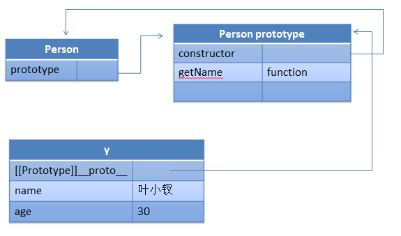

前言
面向对象编程是每次面试必问的知识点，而前端js如何实现继承每次命中率高达80%
这不，近两天我们面试时候，同事就问道面试者此问题，但是，不论之前自己做的回答，还是面试者的回答，基本都不太令人满意
很大的原因是多数时候前端并不需要实现继承，就jquery来说也基本上是一码到底，没有实现继承，据我所知，也就prototype与ext实现过继承
所以继承对前端来说似乎不太适用
近两年来情况有所变化，SPA的兴起以及前端逻辑的复杂化，让前端代码愈发的多，愈发的重，所以继承慢慢的进入了一些初级一点的前端视野
所以，好好的了解如何实现继承，继承的几个用法，是非常有意义的，就算只是为面试都是很有用的
文章只是个人见解，有误请提出，demo未做检测，有误请提出
实现继承
当一个函数被创建时，Function构造函数产生的函数会隐式的被赋予一个prototype属性，prototype包含一个constructor对象
而constructor便是该新函数对象（constructor意义不大，但是可以帮我们找到继承关系）
每个函数都会有一个prototype属性，该属性指向另一对象，这个对象包含可以由特定类型的所有实例共享的属性和方法
每次实例化后，实例内部都会包含一个[[prototype]]（__proto__）的内部属性，这个属性指向prototype
① 我们通过isPrototypeOf来确定某个对象是不是我的原型
② hasOwnPrototype 可以检测一个属性是存在实例中还是原型中，该属性不是原型属性才返回true
var Person = function (name, age) { this.name = name; this.age = age; }; Person.prototype.getName = function () { return this.name; }; var y = new Person('叶小钗', 30);

通俗一点来说，prototype是一模板，新创建对象就是对他一个拷贝，里面的属性或者方法都会赋值给实例
这里说是模板赋值其实不太合理，反正由类产生的所有实例的__proto__都会共享一个prototype，这里我做一个例子
我们在断点情况下是没有name2属性的，但是我们如果在断点下加上这个代码的话，a.name2，就有值了
Klass.prototype.name2 = '222';
所以，这里说模板，不如说是指针指向，都是共享一个对象；继承的情况的话就是这样


(function () { var Person = function (name) { this.name = name; }; //Person.prototype = {};//这句将影响十分具有constructor属性 Person.prototype.getName = function () { return this.name; }; var Student = function (name, sex, id) { this.name = name || '无名氏'; this.sex = sex || '不明'; this.id = id || '未填'; //学号 }; //相当于将其prototype复制了一次，若是包含constructor的话将指向Person Student.prototype = new Person(); Student.prototype.getId = function () { return this.id; } var y = new Person(); var s = new Student; var s1 = y instanceof Person; var s2 = s instanceof Student; var s3 = s instanceof Person; var s4 = Student.prototype.constructor === Person; var s5 = Student.constructor === Person; var s6 = Student.constructor === Function; var s = ''; })();
prototype实现继承
我们在具体项目中，真正复杂一点的项目可能就会对继承进行封装，让自己更好的使用，我们下面就来看看prototype怎么干的
PS：我这里做了一点小的修改：
1 var Class = (function () { 2 function subclass() { }; 3 4 //我们构建一个类可以传两个参数，第一个为需要继承的类， 5 //如果没有的话就一定会有第二个对象，就是其原型属性以及方法，其中initialize为构造函数的入口 6 function create() { 7 8 //此处两个属性一个是被继承的类，一个为原型方法 9 var parent = null; 10 var properties = $A(arguments); 11 12 if (Object.isFunction(properties[0])) 13 parent = properties.shift(); 14 15 //新建类，这个类最好会被返回，构造函数入口为initialize原型方法 16 function klass() { 17 this.initialize.apply(this, arguments); 18 } 19 20 //扩展klass类的“实例”对象（非原型），为其增加addMethods方法 21 Object.extend(klass, Class.Methods); 22 23 //为其指定父类，没有就为空 24 klass.superclass = parent; 25 26 //其子类集合（require情况下不一定准确） 27 klass.subclasses = []; 28 29 //如果存在父类就需要继承 30 if (parent) { 31 //新建一个空类用以继承，其存在的意义是不希望构造函数被执行 32 //比如 klass.prototype = new parent;就会执行其initialize方法 33 subclass.prototype = parent.prototype; 34 klass.prototype = new subclass; 35 parent.subclasses.push(klass); 36 } 37 38 //遍历对象（其实此处这样做意义不大，我们可以强制最多给两个参数） 39 //注意，此处为一个难点，需要谨慎，进入addMethods 40 for (var i = 0, length = properties.length; i < length; i++) 41 klass.addMethods(properties[i]); 42 43 if (!klass.prototype.initialize) 44 klass.prototype.initialize = Prototype.emptyFunction; 45 46 klass.prototype.constructor = klass; 47 return klass; 48 } 49 50 /** 51 由于作者考虑情况比较全面会想到这种情况 52 var Klass = Class.create(parent,{},{}); 53 后面每一个对象的遍历都会执行这里的方法，我们平时需要将这里直接限定最多两个参数 54 */ 55 function addMethods(source) { 56 57 //当前类的父类原型链，前面被记录下来了 58 var ancestor = this.superclass && this.superclass.prototype; 59 60 //将当前对象的键值取出转换为数组 61 var properties = Object.keys(source); 62 63 //依次遍历各个属性，填充当前类（klass）原型链 64 for (var i = 0, length = properties.length; i < length; i++) { 65 66 //property为键，value为值，比如getName: function(){}的关系 67 var property = properties[i], value = source[property]; 68 69 /**************** 70 这里有个难点，用于处理子类中具有和父类原型链同名的情况，仍然可以调用父类函数的方案（我这里只能说牛B） 71 如果一个子类有一个参数叫做$super的话，这里就可以处理了，这里判断一个函数的参数使用了正则表达式，正如 72 var argslist = /^\s*function\s*\(([^\(\)]*?)\)\s*?\{/i.exec(value.toString())[1].replace(/\s/i, '').split(','); 73 ****************/ 74 if (ancestor && Object.isFunction(value) && value.argumentNames()[0] == "$super") { 75 76 //将当前函数存下来 77 var method = value; 78 /**************** 79 第一步： 80 81 这里是这段代码最难的地方，需要好好阅读，我们首先将里面一块单独提出 82 value = (function (m) { 83 return function () { return ancestor[m].apply(this, arguments); }; 84 })(property) 85 这里很牛B的构建了一个闭包（将方法名传了进去），任何直接由其父类原型中取出了相关方法 86 然后内部返回了该函数，此时其实重写了value，value 87 ***这里***有一个特别需要注意的地方是，此处的apply方法不是固定写在class上的，是根据调用环境变化的，具体各位自己去理解了 88 89 第二步： 90 首先value被重新成其父类的调用了，此处可以简单理解为（仅仅为理解）$super=value 91 然后下面会调用wrap操作vaule将，我们本次方法进行操作 92 wrap: function (wrapper) { 93 var __method = this; 94 return function () { 95 return wrapper.apply(this, [__method.bind(this)].concat($A(arguments))); 96 } 97 } 98 可以看出，他其实就是将第一个方法（value）作为了自己方法名的第一个参数了，后面的参数不必理会 99 ****************/ 100 value = (function (m) { 101 return function () { return ancestor[m].apply(this, arguments); }; 102 })(property).wrap(method); 103 } 104 //为其原型赋值 105 this.prototype[property] = value; 106 } 107 return this; 108 } 109 110 return { 111 create: create, 112 Methods: { 113 addMethods: addMethods 114 } 115 }; 116 })();
下面来一个简单的例子：
1 var Person = Class.create({ 2 initialize: function (name) { 3 this.name = name; 4 }, 5 getName: function () { 6 console.log('我是父类'); 7 return this.name; 8 }, 9 getAge: function () { 10 return this.age; 11 } 12 }); 13 14 var Employee = Class.create(Person, { 15 initialize: function ($super, name, age) { 16 $super(name); 17 this.age = age; 18 }, 19 getName: function ($super) { 20 return '我是子类：' + $super(); 21 } 22 }); 23 24 var C = Class.create(Employee, { 25 getAge: function ($super) { 26 return $super(); 27 } 28 }); 29 30 var y = new C("叶小钗", 25); 31 console.log(y.getName() + ': ' + y.getAge());
这里，我们根据自己的需求重写写了下继承相关代码，表现基本与上述一致，各位可以自己试试
PS:当然如果有问题请指出
简化prototype继承
1 var arr = []; 2 var slice = arr.slice; 3 4 function create() { 5 if (arguments.length == 0 || arguments.length > 2) throw '参数错误'; 6 7 var parent = null; 8 //将参数转换为数组 9 var properties = slice.call(arguments); 10 11 //如果第一个参数为类（function），那么就将之取出 12 if (typeof properties[0] === 'function') 13 parent = properties.shift(); 14 properties = properties[0]; 15 16 function klass() { 17 this.initialize.apply(this, arguments); 18 } 19 20 klass.superclass = parent; 21 klass.subclasses = []; 22 23 if (parent) { 24 var subclass = function () { }; 25 subclass.prototype = parent.prototype; 26 klass.prototype = new subclass; 27 parent.subclasses.push(klass); 28 } 29 30 var ancestor = klass.superclass && klass.superclass.prototype; 31 for (var k in properties) { 32 var value = properties[k]; 33 34 //满足条件就重写 35 if (ancestor && typeof value == 'function') { 36 var argslist = /^\s*function\s*\(([^\(\)]*?)\)\s*?\{/i.exec(value.toString())[1].replace(/\s/i, '').split(','); 37 //只有在第一个参数为$super情况下才需要处理（是否具有重复方法需要用户自己决定） 38 if (argslist[0] === '$super' && ancestor[k]) { 39 value = (function (methodName, fn) { 40 return function () { 41 var scope = this; 42 var args = [function () { 43 return ancestor[methodName].apply(scope, arguments); 44 } ]; 45 return fn.apply(this, args.concat(slice.call(arguments))); 46 }; 47 })(k, value); 48 } 49 } 50 51 klass.prototype[k] = value; 52 } 53 54 if (!klass.prototype.initialize) 55 klass.prototype.initialize = function () { }; 56 57 klass.prototype.constructor = klass; 58 59 return klass; 60 }
如此，我们就完成了自己的继承了
实战继承
知道原型可以实现继承是皮毛，知道各个库是怎样干的也只是入门
因为，要在项目中用到才能算真正掌握继承，这里我们便来点实战的小例子
这里我写一个简单的view用于下面各种继承
1 var AbstractView = create({ 2 initialize: function (opts) { 3 opts = opts || {}; 4 this.wrapper = opts.wrapper || $('body'); 5 6 //事件集合 7 this.events = {}; 8 9 this.isCreate = false; 10 11 }, 12 on: function (type, fn) { 13 if (!this.events[type]) this.events[type] = []; 14 this.events[type].push(fn); 15 }, 16 trigger: function (type) { 17 if (!this.events[type]) return; 18 for (var i = 0, len = this.events[type].length; i < len; i++) { 19 this.events[type][i].call(this) 20 } 21 }, 22 createHtml: function () { 23 throw '必须重写'; 24 }, 25 create: function () { 26 this.root = $(this.createHtml()); 27 this.wrapper.append(this.root); 28 this.trigger('onCreate'); 29 this.isCreate = true; 30 }, 31 show: function () { 32 if (!this.isCreate) this.create(); 33 this.root.show(); 34 this.trigger('onShow'); 35 }, 36 hide: function () { 37 this.root.hide(); 38 } 39 }); 40 41 var Alert = create(AbstractView, { 42 43 createHtml: function () { 44 return '<div class="alert">这里是alert框</div>'; 45 } 46 }); 47 48 var AlertTitle = create(Alert, { 49 initialize: function ($super) { 50 this.title = ''; 51 $super(); 52 53 }, 54 createHtml: function () { 55 return '<div class="alert"><h2>' + this.title + '</h2>这里是带标题alert框</div>'; 56 }, 57 58 setTitle: function (title) { 59 this.title = title; 60 this.root.find('h2').html(title) 61 } 62 63 }); 64 65 var AlertTitleButton = create(AlertTitle, { 66 initialize: function ($super) { 67 this.title = ''; 68 $super(); 69 70 this.on('onShow', function () { 71 var bt = $('<input type="button" value="点击我" />'); 72 bt.click($.proxy(function () { 73 alert(this.title); 74 }, this)); 75 this.root.append(bt) 76 }); 77 } 78 }); 79 80 var v1 = new Alert(); 81 v1.show(); 82 83 var v2 = new AlertTitle(); 84 v2.show(); 85 v2.setTitle('我是标题'); 86 87 var v3 = new AlertTitleButton(); 88 v3.show(); 89 v3.setTitle('我是标题和按钮的alert');
{kind=link}
结语
希望这次继承的文章对各位有帮助，此外文中错误请指出
亲爱的道友们，我其实在我们团队只是中等水平，我们上海携程无线是一个优秀的团队，
如果你现在正在找工作，请加入我们吧！！！
在我们团队，你可以肆无忌惮的黑自己的老大，你会体会到和谐的氛围，当然妹子多多的！
要求：靠谱前端，吃苦耐劳，待遇刚刚的！！！
需要的朋友可以私信我
顺便推广道友的jquery技术交流群：239147101